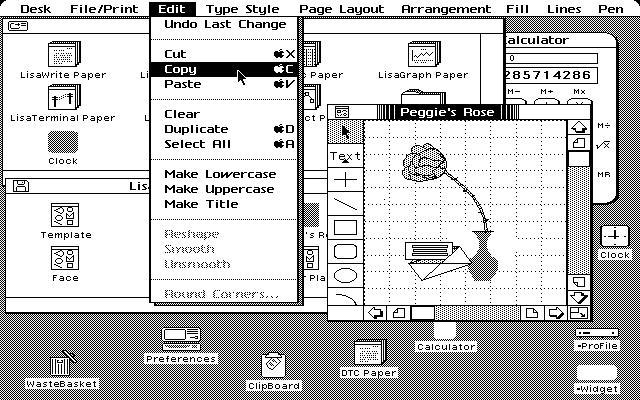

Gradual migration to  ngular
ngular
by Olga Kichewko & Maciek Małecki
How do we start
Where are we going

{kind=link}
Where have we ended
CP/M

Lisa OS
Mac OS
GEOS

Turbo Vision

MS Windows 1.0

MS Windows 3.0
Amiga OS
Atari TOS
NeXT STEP
NCSA Mosaic
CGI
PHP
_waving.svg)
Java
JavaScript
By Digital Research, Inc. - http://www.hampa.ch/pce/screenshots/index.html,
Public Domain, Link
By unknown, Link
By Source, Fair
use, Link
By Screenshot taken and uploaded by Remember the dot (talk ·
contribs), Link
By Screenshot is taken and uploaded by Tyomitch (talk · contribs), Link
By Matthias Jaap - own work, http://www.stcarchiv.de/stc1999/01_tos492.php,
Public Domain, Link
By Source, Fair use, Link
By Colin Viebrock - http://php.net/logos,
CC
BY-SA 4.0, Link
By sbmehta converted to SVG from Sun Microsystems AI version. - http://duke.kenai.com/wave/index.html
(new), https://duke.dev.java.net/images/wave/index.html
(old), BSD, Link
By Chris Williams - GitHub.com,
Public Domain, Link
{kind=link}
{kind=link}
{kind=link}

Source: https://www.joelonsoftware.com
Joel Spolsky
- Program Manager in Microsoft Excel Team
- Co-Founder of Stack Overflow
- Founder of Trello

Joel Spolsky
Things you should never do"Programmers are, in their hearts, architects, and the first thing they want to do when they get to a site is to bulldoze the place flat and build something grand."
Challenge
Migrate an old style web app into modern cutting edge Angular something...
- we want to have complex dynamics on our pages
- we can easily test UI written in Angular
- server-generated HTML pages are no longer "sexy"
Possibilities
Big bang
- clean sheet design
- no impact on production during dev
- huge effort before it's ready
- "chase the rabbit"
- necessity to use two apps
"Big bang approach fails by definition for bigger projects."
if only we could migrate gradually...
- we could deliver small chunks on regular basis
- compatible with CI/CD
- no cancellation risk: code is already there
- two technologies mixed for some (long) time
Let's complicate our case
CI/CD
- Working (almost) always on short living branches
- Kanban - no sprints
- Automatic deployment on test environment
- Production releases at least once per week
Our approach
Spring MVC
- server side rendering
- template engine
- maybe some standalone JS
- maybe some AJAX calls
Hybrid
- Angular as JS library
- Manages just portion of the page
- No routing
- One by one migration
SPA
- All pages are Angular components
- Router introduced
- Routings defined
Demo time
Let's summarize
 Happy parts
Happy parts
- It works!
- Very effective for good source architecture
 Tricky parts
Tricky parts
- Communication between Thymeleaf and Angular
- Root component
- Angular resources versioning
- Developers' mode
Find us on GitHub
 https://github.com/kiczelkoo/miniAngular
https://github.com/kiczelkoo/miniAngular